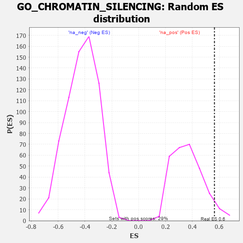

| | | Dataset | 7d |
| Phenotype | NoPhenotypeAvailable |
| Upregulated in class | na_pos |
| GeneSet | GO_CHROMATIN_SILENCING |
| Enrichment Score (ES) | 0.56450903 |
| Normalized Enrichment Score (NES) | 1.5335276 |
| Nominal p-value | 0.055363324 |
| FDR q-value | 0.25773385 |
| FWER p-Value | 1.0 |
Table: GSEA Results Summary
 Fig 1: Enrichment plot: GO_CHROMATIN_SILENCING
Fig 1: Enrichment plot: GO_CHROMATIN_SILENCING
Profile of the Running ES Score & Positions of GeneSet Members on the Rank Ordered List
| PROBE | GENE SYMBOL | GENE_TITLE | RANK IN GENE LIST | RANK METRIC SCORE | RUNNING ES | CORE ENRICHMENT | | 1 | H2AX | | | 20 | 4.738 | 0.3583 | Yes |
| 2 | CDC45 | | | 239 | 0.950 | 0.4033 | Yes |
| 3 | H2AJ | | | 404 | 0.697 | 0.4358 | Yes |
| 4 | EED | | | 409 | 0.690 | 0.4878 | Yes |
| 5 | HAT1 | | | 454 | 0.659 | 0.5324 | Yes |
| 6 | HIRA | | | 568 | 0.608 | 0.5645 | Yes |
| 7 | HDAC5 | | | 900 | 0.506 | 0.5614 | No |
| 8 | UBR2 | | | 1334 | 0.423 | 0.5392 | No |
| 9 | SIN3A | | | 2361 | 0.251 | 0.4294 | No |
| 10 | CTBP1 | | | 4323 | -0.064 | 0.1878 | No |
| 11 | PPM1D | | | 4805 | -0.158 | 0.1394 | No |
| 12 | PCGF2 | | | 5943 | -0.451 | 0.0308 | No |
| 13 | DOT1L | | | 6939 | -0.897 | -0.0259 | No |
| 14 | DPY30 | | | 6976 | -0.923 | 0.0398 | No |
| 15 | DYDC1 | | | 7246 | -1.118 | 0.0911 | No |
Table: GSEA details [plain text format]

Fig 2: GO_CHROMATIN_SILENCING: Random ES distribution
Gene set null distribution of ES for GO_CHROMATIN_SILENCING